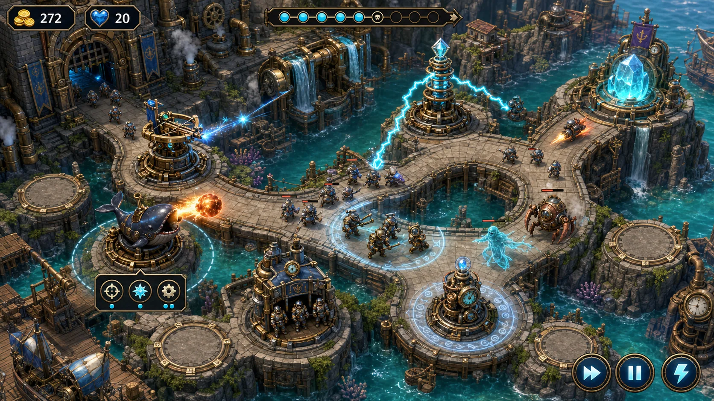

SEA KINGDOM / ASSET PIPELINE
全量素材工作台
统一生成、试听和挑选游戏中的图像、地图音乐、战斗音效与环境声。

统一视觉参考
透明物件会自动切图；背景与整幅界面保留完整画面。动画项目仅生成关键帧参考。
正在读取本地图像素材清单…
声音制作规则
六张地图各有独立音乐。生成结果先作为候选版本保存；试听后点击“采用此版”，才会发布到游戏正式音频目录。
正在读取本地声音需求清单…